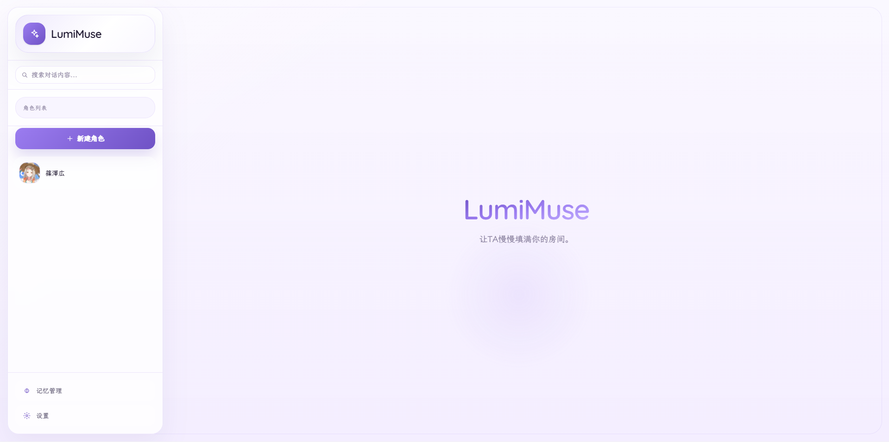

INDEPENDENT PRODUCT / IN PROGRESS
PRODUCT 01
Xloun
让 TA 成为真正了解你的朋友。
一款安静、轻量、可自托管的 AI 情感陪伴产品。通过角色级长期记忆、现实时间注入与多模型能力， 让关系在多轮、跨日和跨会话中保持连续，同时把数据留在用户自己的设备或服务器。
ROLE产品定义 / PRD / 原型
STACKNext.js · React · SQLite
PRODUCT PREVIEW01—05
